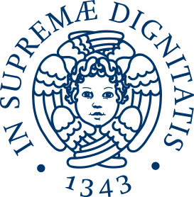

Istituto Nazionale di Fisica Nucleare (INFN) – Coordinator
Italy’s national institute for nuclear and particle physics, leading ERNEST and contributing expertise in large-scale research and science outreach.
The Network
ERNEST is powered by a diverse European network of institutions, researchers, educators, and creative professionals working together to transform science into immersive experiences. At the heart of the project is a multidisciplinary consortium that combines scientific excellence with expertise in education, communication, and game design.
Institutions
The organizations connecting research, education, and society through immersive scientific experiences.
Italy’s national institute for nuclear and particle physics, leading ERNEST and contributing expertise in large-scale research and science outreach.
Italy’s leading institute for astrophysics research, contributing expertise in space science, astronomy, and public engagement.
Italy’s largest public research organization, covering a wide range of scientific disciplines from environmental science to technology and innovation.
France’s national research center, bringing international expertise in fundamental science and interdisciplinary research.
A globally recognized research university contributing expertise in physics, data science, and large-scale science communication.

A major Italian university contributing research and educational expertise across multiple scientific fields.

A historic Italian university active in physics research and innovative science education initiatives.
University coordinating communication and outreach activities within ERNEST, with strong experience in public engagement.
An Italian university engaged in interdisciplinary research, including health sciences and innovation.

A leading European university with strong contributions in physics, engineering, and science communication.
A major Italian university contributing to research, education, and the development of innovative outreach methodologies.
An organization specializing in social innovation and inclusion, supporting ERNEST in outreach strategies and societal impact.
Members gallery
A growing community of researchers, educators, and creatives bringing science to life through collaboration and play.